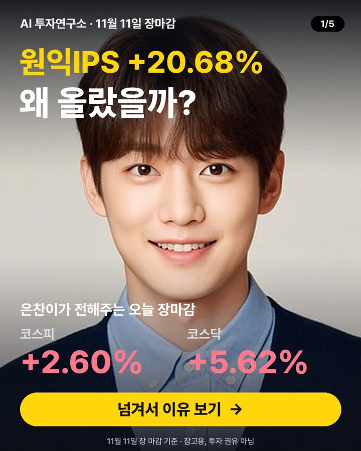

11월 11일 장마감 요약 — 코스피 +2.60%, 코스닥 +5.62%
2026-11-11 장 마감 기준 · 진행 서은찬 (수급·뉴스·실적)

오늘 코스피는 5,375.36로 +2.60%, 코스닥은 705.10로 +5.62% 마감했어요. 대형주 78종목 중 54개가 오르고 22개가 내렸어요. 원/달러 환율은 1,342원이에요.
지수 흐름
| 종가 | 하루 | 1주 | 1달 | |
|---|---|---|---|---|
| 코스피 | 5,375.36 | +2.60% | -5.43% | -10.54% |
| 코스닥 | 705.10 | +5.62% | -1.38% | -14.42% |
많이 오른 종목
- 원익IPS +20.68% · 81,700원
호재3분기 영업이익이 전년 대비 142% 상승했어요 - 에코프로비엠 +13.55% · 92,200원
호재헝가리 공장 정상화와 신규 수주 기대감으로 주가가 올랐어요 - 에코프로 +12.06% · 73,400원
호재헝가리 공장 정상화와 신규 수주 임박으로 출하 회복 기대 - 이오테크닉스 +11.24% · 376,000원
호재2027년 실적 성장 기대감으로 투자자들이 매수했어요 - 리가켐바이오 +11.15% · 65,800원
호재유방암 ADC 1상 임상 연장·데이터 보완으로 기술이전 기대돼요
많이 내린 종목
- 삼성화재해상보험 -5.49% · 568,000원
악재투자 부문 부진으로 3분기 순이익이 감소했어요 - 크래프톤 -5.06% · 195,100원
악재영업비용 증가와 신작 출시 지연으로 영업이익이 감소했어요 - 고려아연 -3.34% · 925,000원
악재법원 판결로 영풍·MBK 의결권 제한 결의가 취소돼 경영권 방어가 어려워졌어요 - 메리츠금융지주 -3.27% · 124,300원
악재3분기 실적이 기대 이하라서 주가가 떨어졌어요 - 대한항공 -3.22% · 31,550원
중립새로운 뉴어크 노선 개설 소식이 실적에 직접 영향 없어 주가가 하락
누가 사고 팔았나 (순매수)
| 외국인 | 기관 | 개인 | |
|---|---|---|---|
| 코스피 | +4,123억 원 | -6,624억 원 | -2,689억 원 |
| 코스닥 | -3,547억 원 | +420억 원 | +3,112억 원 |
내일 체크 포인트
- 외국인 흐름 — 오늘 코스피에서 +4,123억 원 순매수
- 국제유가 — 최근 한 달 -11.76%
- 미국 10년 금리 5.06% · 공포지수 VIX 18.1
- 20일 이동평균선 위에 있는 대형주 26/78종목
이 글은 공개된 시세·수급 데이터와 그날 뉴스 제목을 정리한 참고 자료이며 투자 권유가 아닙니다. 시세는 거래소 종가 기준이고, 투자 판단과 결과의 책임은 본인에게 있습니다.